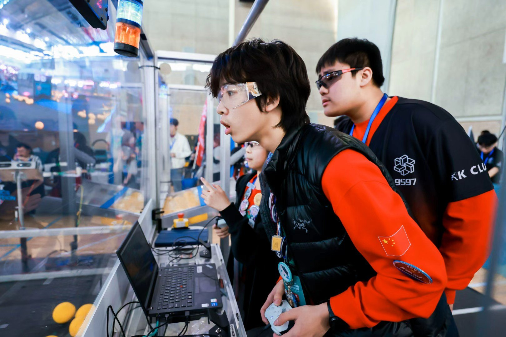

Main OperatorMatt Cui
The main operator of the team. He has studied robotics for 8 years with extensive practice. He has won numerous awards in previous competitions. His love for robotics drives him to the role of captain of a VEX team in WAB.